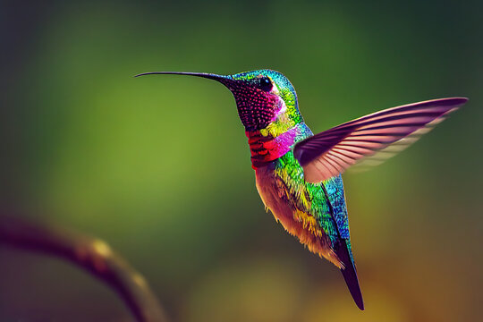
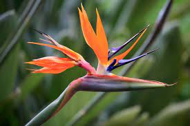
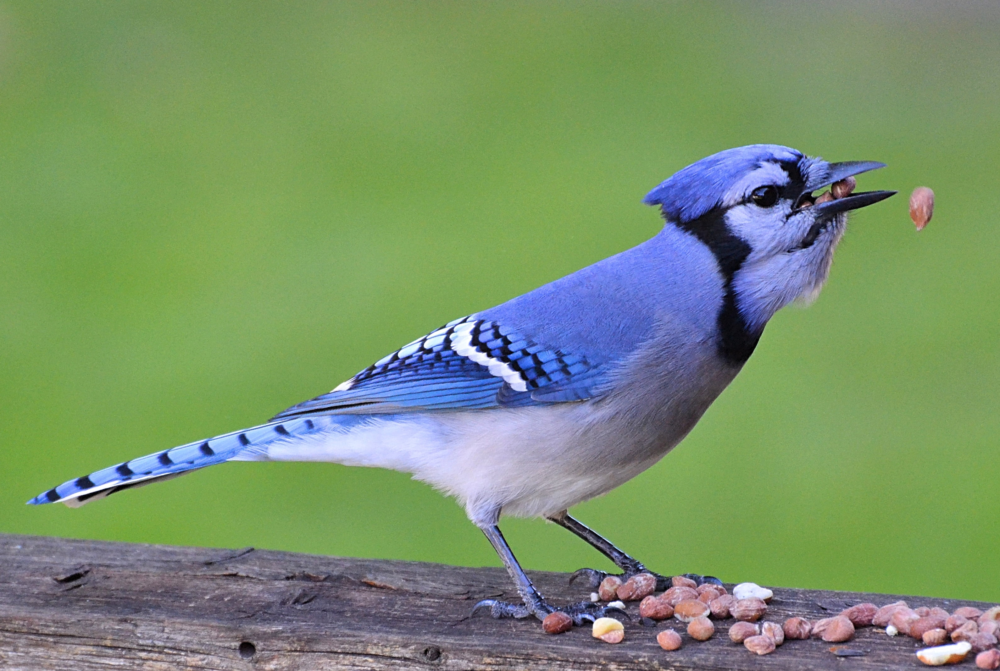

Different Species of Birds
(Increase the brightness of your device if needed to view the text, but be careful with your eyes.)
Birds are one of the most diverse and captivating groups of animals on our planet. With an incredible array of colors, shapes,
sizes, and behaviors, they have captured the fascination of humans for centuries. From the majestic soaring of eagles to the delicate
beauty of hummingbirds, the avian world is home to a vast number of species that inhabit diverse habitats across the globe. Whether you marvel
at the graceful flight of swans, the playful antics of parrots, or the rhythmic melodies of songbirds, each species of bird
brings its own unique charm and adaptations. Join us on a journey as we explore the rich and varied world of
different bird species, discovering their remarkable characteristics and the wonders they bring to our natural world.

Hummingbirds:
Hummingbirds, small and agile, are captivating birds found exclusively in the Americas. With over 300 species, they display a stunning array of
vibrant colors and intricate feather patterns. Their ability to hover, fly backwards, and even upside down is made possible by their rapid wing
flapping and specialized beaks for sipping nectar.Hummingbirds boast a fast metabolism, requiring them to consume
ample amounts of nectar and supplement their diet with insects. Their courtship displays and
unique vocalizations add to their allure, making them a truly fascinating and enchanting group of birds.

Birds of Paradise: Birds of paradise are a remarkable group of birds found in the rainforests of New Guinea and surrounding islands.
Known for their stunning plumage and elaborate courtship displays, these birds showcase an extraordinary range of
colors, shapes, and behaviors. Each species possesses unique features, such as elaborate tail feathers or striking head
crests, contributing to their captivating appearance. The males engage in intricate mating rituals, displaying
mesmerizing movements and vibrant displays to attract females. Birds of paradise are a testament to nature's
incredible diversity and serve as a testament to the beauty and wonder of the avian world.

Blue Jay: The Blue Jay (Cyanocitta cristata) is a striking bird known for its vibrant
blue plumage, contrasting white chest, and distinctive crested head. Native
to North America, Blue Jays are highly recognizable and often make their
presence known with their loud and varied calls. These intelligent and
social birds are commonly found in woodlands, parks, and suburban areas.
Blue Jays are omnivorous, feeding on a wide range of food including nuts,
seeds, insects, and occasionally small vertebrates. They are also known to
cache food for later consumption, using their strong beaks to hide and
retrieve their hidden treasures. With their bold colors and lively presence,
Blue Jays are a delightful addition to the avian world. Next Page